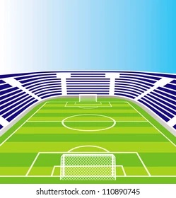

<!DOCTYPE html>
<html>
<head>
    
    <meta http-equiv="content-type" content="text/html; charset=UTF-8" />
    
        <script>
            L_NO_TOUCH = false;
            L_DISABLE_3D = false;
        </script>
    
    <style>html, body {width: 100%;height: 100%;margin: 0;padding: 0;}</style>
    <style>#map {position:absolute;top:0;bottom:0;right:0;left:0;}</style>
    <script src="https://cdn.jsdelivr.net/npm/leaflet@1.9.3/dist/leaflet.js"></script>
    <script src="https://code.jquery.com/jquery-3.7.1.min.js"></script>
    <script src="https://cdn.jsdelivr.net/npm/bootstrap@5.2.2/dist/js/bootstrap.bundle.min.js"></script>
    <script src="https://cdnjs.cloudflare.com/ajax/libs/Leaflet.awesome-markers/2.0.2/leaflet.awesome-markers.js"></script>
    <link rel="stylesheet" href="https://cdn.jsdelivr.net/npm/leaflet@1.9.3/dist/leaflet.css"/>
    <link rel="stylesheet" href="https://cdn.jsdelivr.net/npm/bootstrap@5.2.2/dist/css/bootstrap.min.css"/>
    <link rel="stylesheet" href="https://netdna.bootstrapcdn.com/bootstrap/3.0.0/css/bootstrap.min.css"/>
    <link rel="stylesheet" href="https://cdn.jsdelivr.net/npm/@fortawesome/fontawesome-free@6.2.0/css/all.min.css"/>
    <link rel="stylesheet" href="https://cdnjs.cloudflare.com/ajax/libs/Leaflet.awesome-markers/2.0.2/leaflet.awesome-markers.css"/>
    <link rel="stylesheet" href="https://cdn.jsdelivr.net/gh/python-visualization/folium/folium/templates/leaflet.awesome.rotate.min.css"/>
    
            <meta name="viewport" content="width=device-width,
                initial-scale=1.0, maximum-scale=1.0, user-scalable=no" />
            <style>
                #map_52dbf9b5229556dcb725a86f0ec02661 {
                    position: relative;
                    width: 100.0%;
                    height: 100.0%;
                    left: 0.0%;
                    top: 0.0%;
                }
                .leaflet-container { font-size: 1rem; }
            </style>
        
</head>
<body>
    
    
            <div class="folium-map" id="map_52dbf9b5229556dcb725a86f0ec02661" ></div>
        
</body>
<script>
    
    
            var map_52dbf9b5229556dcb725a86f0ec02661 = L.map(
                "map_52dbf9b5229556dcb725a86f0ec02661",
                {
                    center: [45.0, -30.0],
                    crs: L.CRS.EPSG3857,
                    zoom: 3,
                    zoomControl: true,
                    preferCanvas: false,
                }
            );

            

        
    
            var tile_layer_066e2999521bbb9046bbca6544757bb3 = L.tileLayer(
                "https://tile.openstreetmap.org/{z}/{x}/{y}.png",
                {"attribution": "\u0026copy; \u003ca href=\"https://www.openstreetmap.org/copyright\"\u003eOpenStreetMap\u003c/a\u003e contributors", "detectRetina": false, "maxNativeZoom": 19, "maxZoom": 19, "minZoom": 0, "noWrap": false, "opacity": 1, "subdomains": "abc", "tms": false}
            );
        
    
            tile_layer_066e2999521bbb9046bbca6544757bb3.addTo(map_52dbf9b5229556dcb725a86f0ec02661);
        
    
            var marker_0b1ac7ae180a58333e728ecc54383a0c = L.marker(
                [33.756342349687586, -84.39351094004493],
                {}
            ).addTo(map_52dbf9b5229556dcb725a86f0ec02661);
        
    
            var icon_353e2f8f9448a78657e23b49599357da = L.AwesomeMarkers.icon(
                {"extraClasses": "fa-rotate-0", "icon": "heart", "iconColor": "red", "markerColor": "green", "prefix": "glyphicon"}
            );
            marker_0b1ac7ae180a58333e728ecc54383a0c.setIcon(icon_353e2f8f9448a78657e23b49599357da);
        
    
        var popup_ff82b919437fe6ab2d0c0ad4c99e59d6 = L.popup({"maxWidth": "100%"});

        
            
                var html_83ffbd48db24ba74da626ca81c8721ca = $(`<div id="html_83ffbd48db24ba74da626ca81c8721ca" style="width: 100.0%; height: 100.0%;"><h1>My Favourite Stadium</h1><p>This is the best stadium out in Atl</p></div>`)[0];
                popup_ff82b919437fe6ab2d0c0ad4c99e59d6.setContent(html_83ffbd48db24ba74da626ca81c8721ca);
            
        

        marker_0b1ac7ae180a58333e728ecc54383a0c.bindPopup(popup_ff82b919437fe6ab2d0c0ad4c99e59d6)
        ;

        
    
    
            marker_0b1ac7ae180a58333e728ecc54383a0c.bindTooltip(
                `<div>
                     ElCruzo Stadium
                 </div>`,
                {"sticky": true}
            );
        
    
            var circle_0195bb7ed56c3f67facefcbf904fd3ee = L.circle(
                [33.75596703814469, -84.38916676893841],
                {"bubblingMouseEvents": true, "color": "blue", "dashArray": null, "dashOffset": null, "fill": true, "fillColor": "blue", "fillOpacity": 0.2, "fillRule": "evenodd", "lineCap": "round", "lineJoin": "round", "opacity": 1.0, "radius": 800, "stroke": true, "weight": 3}
            ).addTo(map_52dbf9b5229556dcb725a86f0ec02661);
        
    
        var popup_abe804fb0dfe8f48f08355c7730d14d4 = L.popup({"maxWidth": "100%"});

        
            
                var html_fd47a40301a3b7d693c7b3db6cb1855a = $(`<div id="html_fd47a40301a3b7d693c7b3db6cb1855a" style="width: 100.0%; height: 100.0%;">Love the area</div>`)[0];
                popup_abe804fb0dfe8f48f08355c7730d14d4.setContent(html_fd47a40301a3b7d693c7b3db6cb1855a);
            
        

        circle_0195bb7ed56c3f67facefcbf904fd3ee.bindPopup(popup_abe804fb0dfe8f48f08355c7730d14d4)
        ;

        
    
</script>
</html>